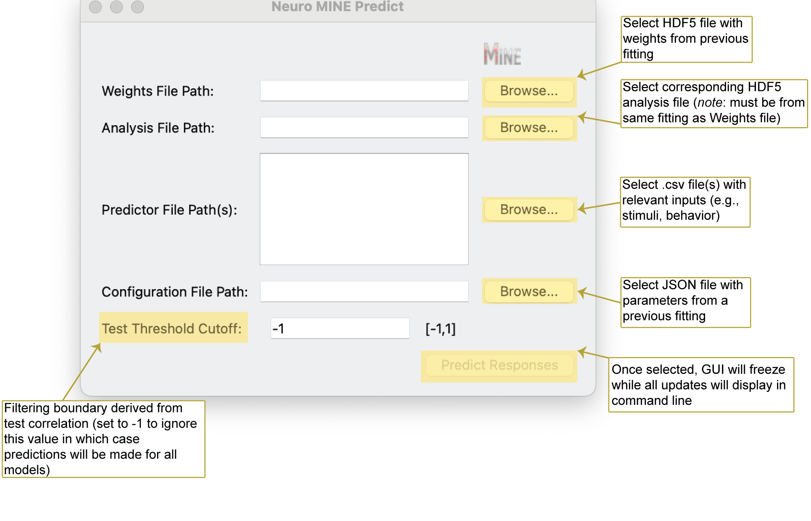

Prediction Module
Launch GUI for response prediction
Mine-predict
Possible command line arguments for prediction with Neuro-MINE
Mine-predict -p <predictor directory or filepath(s)> -o <JSON filepath with model parameters> -w <hdf5 filepath with weights> -a <hdf5 filepath with analysis of fit> -ct <test score threshold>
See possible command line prompts to parametrize the prediction
Mine-predict --help
Prediction GUI Explanation
